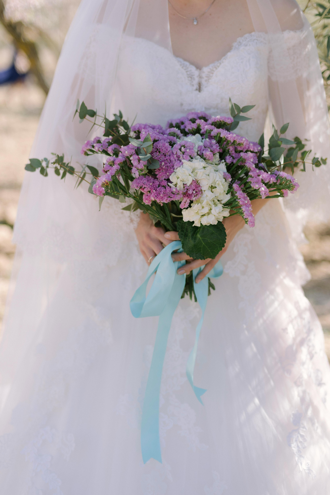

Nasza kwiaciarnia powstała z pasji do roślin i sztuki florystycznej. Od początku naszym celem było stworzenie miejsca, w którym kwiaty stają się czymś więcej niż tylko dekoracją – sposobem wyrażania emocji, podkreślania ważnych chwil i tworzenia wyjątkowej atmosfery. Z czasem mała pracownia florystyczna zaczęła się rozwijać, a liczba osób, które nam zaufały, stale rosła.

Tworzenie bukietów to dla nas połączenie kreatywności, estetyki i pracy z naturą. Staramy się dobierać kwiaty w taki sposób, aby każda kompozycja była harmonijna i dopasowana do okazji. Inspiracji szukamy zarówno w klasycznej florystyce, jak i w nowoczesnych trendach, dzięki czemu nasze kompozycje są różnorodne i niepowtarzalne.
Każde zamówienie traktujemy indywidualnie, ponieważ wiemy, że za każdym bukietem stoi jakaś historia – urodziny, rocznica, podziękowanie czy ważne wydarzenie rodzinne. Zawsze staramy się doradzić w wyborze kwiatów i stworzyć kompozycję, która najlepiej odda charakter danej chwili.
